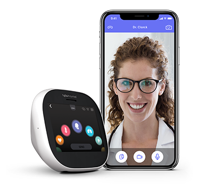

<!DOCTYPE html>
<html lang="en">
  <head>
    <meta charset="UTF-8" />
    <meta http-equiv="X-UA-Compatible" content="IE=edge" />
    <meta name="viewport" content="width=device-width, initial-scale=1.0" />
    <title>Portfolio-project>title>
    <link
      href="https://cdn.jsdelivr.net/npm/bootstrap@5.1.3/dist/css/bootstrap.min.css"
      rel="stylesheet"
      integrity="sha384-1BmE4kWBq78iYhFldvKuhfTAU6auU8tT94WrHftjDbrCEXSU1oBoqyl2QvZ6jIW3"
      crossorigin="anonymous"
    />
    <link rel="preconnect" href="https://fonts.googleapis.com" />
    <link rel="preconnect" href="https://fonts.gstatic.com" crossorigin />
    <link
      href="https://fonts.googleapis.com/css2?family=Montserrat:wght@400;500;600&family=Nunito:wght@400;700&display=swap"
      rel="stylesheet"
    />
    <link rel="stylesheet" href="styles/portfolio.css" />
    <script
      src="https://cdn.jsdelivr.net/npm/bootstrap@5.1.3/dist/js/bootstrap.bundle.min.js"
      integrity="sha384-ka7Sk0Gln4gmtz2MlQnikT1wXgYsOg+OMhuP+IlRH9sENBO0LRn5q+8nbTov4+1p"
      crossorigin="anonymous"
    ></script>
    <script
      src="https://kit.fontawesome.com/12faf7524d.js"
      crossorigin="anonymous"
    ></script>
  </head>
  <body>
    <div class="hero">
      <p>Hello, I am doctor</p>
      <h1>Iryna Beylin</h1>
      <h2 class="mb-3">
        Your health is my priority. I am here to help you feel better and enjoy
        every day of your life!
      </h2>
      <div>
        <a href="#" class="btn btn-branding">Contact me</a>
      </div>
    </div>
    <p class="text-center m-5">
      I provide the most full medical services, so every person could have the
      opportunity to receive qualitative medical help.
    </p>
    <div class="container">
      <div class="row mb-5">
        <div class="col d-none d-lg-block">
          
        </div>
        <div class="col">
          <div class="project-description">
            <h2 class="mb-5">A pre-appointment check-up</h2>
            <p class="mb-5 text-muted">
              Whichever specific health issue you’re currently facing, you are
              able to take part in our pre-appointment check-up, in order to
              receive better help
            </p>
            <a href="#" class="btn btn-branding-outline">Learn more</a>
          </div>
        </div>
      </div>
    </div>
    <div class="container">
      <div class="row mb-5">
        <div class="col">
          <div class="project-description">
            <h2 class="mb-5">Control your behaviour App</h2>
            <p class="mb-5 text-muted">
              You can become a part of special program to children with ADHD -
              may have trouble paying attention, controlling impulsive behaviors
              (may act without thinking about what the result will be), or be
              overly active. Our App helps your chid helps minimaze
              distractions, and stay focused on what important.
            </p>
            <a href="#" class="btn btn-branding-outline">Learn more</a>
          </div>
        </div>
        <div class="col d-none d-lg-block second-section">
          
        </div>
      </div>
    </div>
    <div class="container">
      <div class="row">
        <div class="col d-none d-lg-block">
          
        </div>
        <div class="col">
          <div class="project-description">
            <h2 class="mb-5">Unique online consultation using TYTO</h2>
            <p class="mb-5 text-muted">
              Save your health and time - take an oline consultation. TYTO
              technology allows clinicians to conduct medical exams remotely for
              accurate diagnoses – listen to heart and lung sounds, look into
              the ear canal, throat, blood pressure, blood oxygen levels,
              weight, and more.
            </p>
            <a href="#" class="btn btn-branding-outline">Learn more</a>
          </div>
        </div>
      </div>
    </div>
  </body>
</html>
